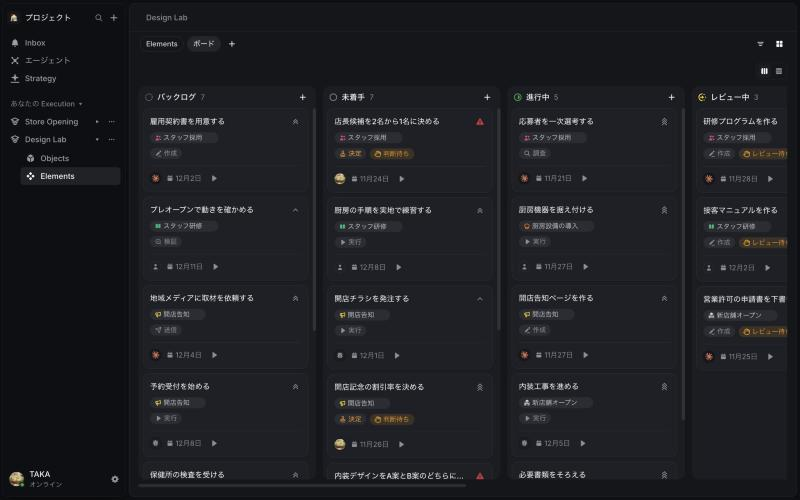

届いた依頼は、すべて担当つきのタスクに。
取り消せない操作だけ、あなたの承認を待ちます。
- 集める届いたとき、または毎朝9時
- 振り分ける人かAIに担当を付ける
- 人が判断する 判断待ち承認か、差し戻し
- 確かめて完了別のAIが確かめる


5つのAgent。最後の判断は、すべて人。
| 業務 | AIがやること | 人が決めること |
|---|---|---|
| 問い合わせの受付 | 分類して記録し、返信を下書き | 送るかどうか |
| 朝のまとめ | 未対応と高リスクを先頭に並べる | どれから手を付けるか |
| クレームの分析 | 原因を分類し、改善案を出す | どの案を採るか |
| 営業のフォロー | 商談後の連絡を下書き | 何を送るか |
| 開発 | 隔離した環境で変更し、PRを出す | マージするかどうか |
止まるべきところで、止まる。
- 承認
- 実行する入力そのものに結び付く。AIは自分で承認できない。
- 検証役
- 別のAIが成果物を確かめる。
- 自動停止
- 連続した書き込み、エラー、初めての送信先で止まる。
- 費用の上限
- 月の予算を超えて動かない。
- 資格情報を見せない
- ログイン情報は保管庫に置く。
- すべて記録に残る
- 実行はすべて記録される。